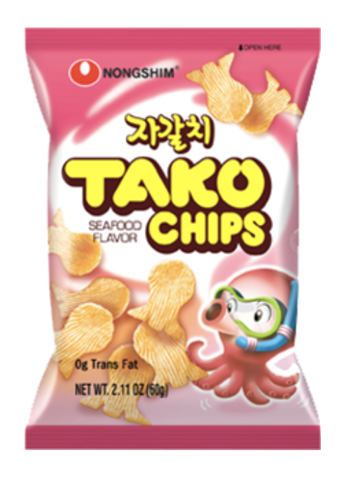
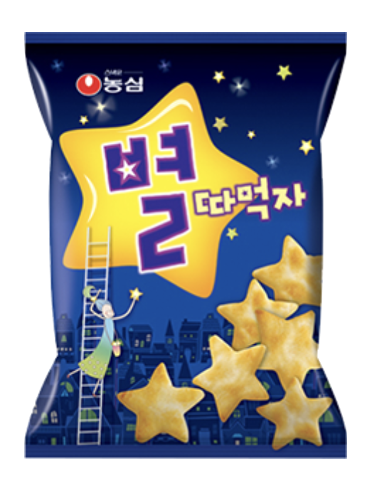
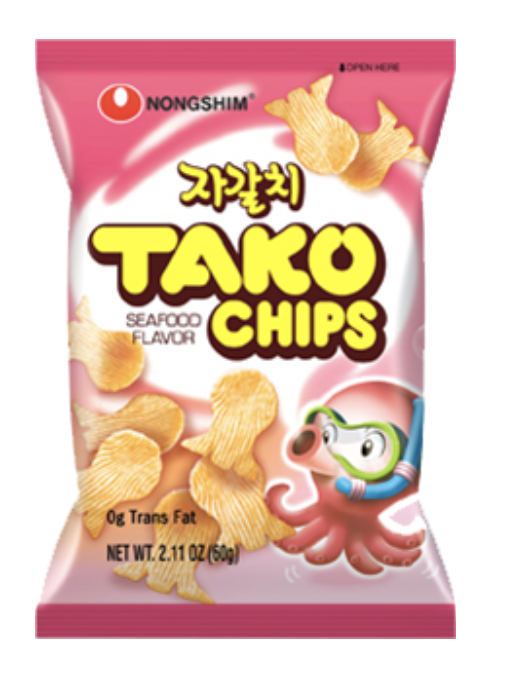
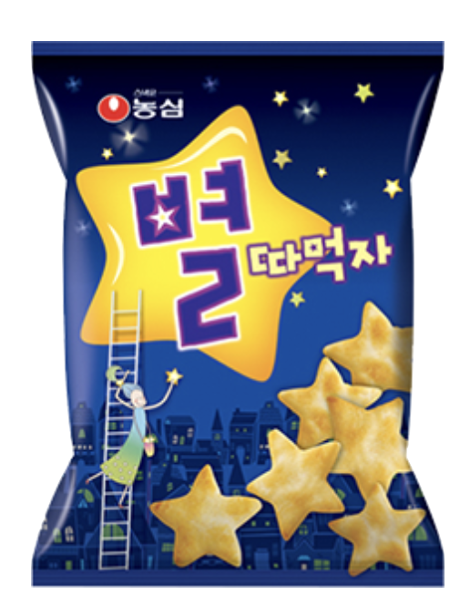

Onion Snack
Weight: 70g
Year of Release: 1973
Rating: 3/5
Notable flavors: onion
My sister liked this snack because of the leaf-shaped chips, but found it underwhelming due to its healthy taste compared to American chip brands such as Lays and Doritos. For me, the taste was okay, but there wasn't anything other than the shape that made it stand out from other Nongshim chip snacks.
 


